Members: Winter Galyon, Patrick Liu, Connor Reitz, Joey Crawford Computer Vision Class Project, Fall 2020 Georgia Tech CS 4476, Intructor: Devi Parikh
Abstract
Our project aims to identify where an input satellite image was taken relative to a known comprehensive satellite image. The case we hope to apply this to is an elevation map of mars provided by Google Mars. The input to our algorithm is an image of the surface of Mars and the output would be the location of that image relative to the elevation map we use as a reference as well as the orientation and size of the image relative to the Google Mars map, which could be used to identify the elevation the image would have been taken at if from a satellite.
Introduction
The problem we are solving is narrowly defined as locating the place where an image was taken from a satellite image of mars. This is applicable to real life space missions where a satellite may use this to find a location with accuracy, as inertial sensors often propagate error and there is not the benefit of GPS while in space. Using large high resolution images provided by the Google Mars project, we are using multiple approaches and contrasting them, ideally creating a combined algorithm with the redundancy necessary to accurately pinpoint a location in a variety of scenarios. There is no current computer vision approach to solving the problem of satellite localization, but the methods being used are similar to other image matching approaches.
The first approach is using a hough circle detector to find circles in a test image. These circles can then be compared to the circles in the map image to find a section with a similar feature signature to the test image. This is similar to a feature matching algorithm, with a focus on circles as the martian surface is covered in craters which make circle detection a uniquely effective feature detector.
The next approach is using a blob detector along with using SURF (speed up robust features) to perform object detection for the craters. We will then use this in combination with an SSD (single-shot multibox detector) to increase the accuracy of detecting these craters.
Teaser Figure
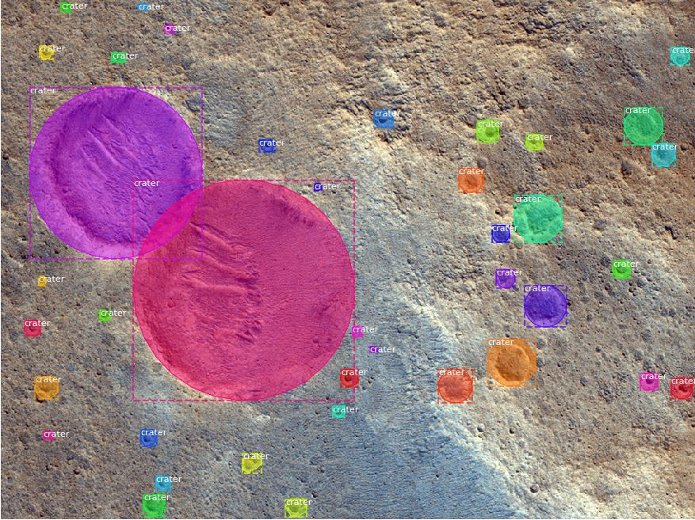
Approach
Our approach will result in a confidence matrix of the possible locations for the center of the viewing window (the input image). This will be constructed using several approaches which will be weighted and combined into a single nxm matrix where n and m are the dimensions of the google mars source image. (we can orient the input image when we get to that by matching the average gradient direction of the input window and the Google Mars picture)
One approach we will conduct is to find the center of a large number of the craters in the source image (elevation map from Google Mars) and store these as a nxm matrix wherein the center of each crater will be recorded as defined by a run of the hough circle detector (using gradients to decrease noise) on a set number of known radii. This will result in a number (R) of nxm matrices, one for each radius we choose to edge detect with.This algorithm will then be run on the input image and another R matrices will be made with a number of centers. This will then be randomly overlaid with the source image and a Gradient Descent algorithm with Simulated Annealing will be run to gradually converge on a local minimum (ideally the true minimum) for the distance to predicted crater centers. This will be run many times to prevent the location of local minima rather than the true minimum. The equation we want to optimise is the sum of distances between each center in the input to the closest centers in the source image. We will begin by writing the algorithm with a known window size for the input and known orientation (the same as the Google Mars orientation).
We will also be implementing a version of Speeded-Up Robust Features (SURF) to map an image to a location on Mars. To break down my process, the algorithm will have three parts: interest point identification, local neighborhood description, and matching. Utilizing the integral image, the algorithm will filter and use a blob detector to detect interest points. Different scales are obtained by applying box filters of different sizes. Local orientation vectors are then calculated using Haar wavelet responses weighed by a Gaussian function to determine the dominant orientation. The descriptors from the image and Mars will be compared to determine matching pairs.
Another technique we can use to perform feature detection and matching is by using SIFT (scale invariant feature transform), which is robust to rotation and scale. Initially to actually extract the features, we use a space-scale blob detector to identify the local maxima in the image. We then create a vector based on these extracted features using SIFT and use a thresholding along with euclidean distance ratios to feature match.
One last technique we will experiment with (measuring accuracy and speed) is by using the BRIEF (binary robust independent elementary features) feature detection and matching method. This method matches keypoints between the test images and the original image by using binary feature vectors. The image will first be smoothed by a Gaussian kernel. Then, the algorithm will find keypoints in the image and create descriptors to encode a numerical “fingerprint” so we can tell each feature apart from another. This image will then take image patches around the keypoint pixels, convert them into binary feature vectors, and represent the objects for matching.
Experiments and results
Our experiment is to compare a set of images of different sizes and orientations from random locations on the Google Mars ‘visible’ map with the full image. Knowing where the image is on the map, determine how accurately the program was able to locate where the image was at using the error calculation on the x and y location of the predicted location as well as the size and orientation. We will begin by knowing how large the window size is and that the orientation is north south (the same as the google mars source image). Then as we succeed we will make the algorithm more robust by using different orientations and gradually decreasing the window size of input images to prove greater efficacy.
For our success criteria, the program is expected to be slightly less accurate with smaller areas of the map, as there are less features that we can extract to define the image. Initially we will start off by demonstrating a brute-force approach, which will be very computationally expensive and take very long to run as a result. We will then contrast this brute-force approach with the other algorithms/optimizations that we found through our research and compare the computation time as well as accuracy to our other approaches that we present. To actually assess the runtime and accuracy, we plan on using the time library for Python. For computing accuracy, we plan on using several metrics such as SSD and RMSE to compare our approaches.
Hough Circle Detection Approach
To allow for feature matching the hough circle detector had to be calibrated for the mars images. Using two test images shown below, the sigma for the canny image detector and a range of possible circle sizes was determined. The optimal sigma was found to be 3 for the images we are testing with as it qualitatively displays rough circles which are representative of the actual image’s craters. This, however, may be further altered in the future so that the algorithm weighs which sigma gives the best possible set of edges depending on the quality of the image provided. However, there are limited datasets displaying the entirety of the martian surface so there is only minimal necessity for this algorithm to succeed on other datasets.
A range of circles from radius 10 to 90 pixels was found to encompass the majority of distinctive craters in the mars images. The hough circle detector will find only three craters in each image. This is because using three craters, the features found will be unique to the image being scanned. If only two were used, then any two craters could be matched to the image being compared given a rotation and dilation. With three, a unique triangle is made between the circles at each radius. The images below are the circles found at each radius on two test images. These images show that the algorithm is generally able to find three circles of various radii, and because circle detection is performed at 9 different radii the redundancy will allow the comparison between images to be robust so that a unique fingerprint is made of the images being searched for.
Test image 1
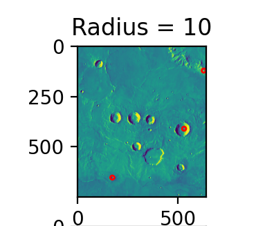
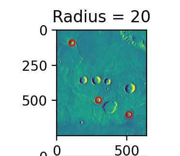
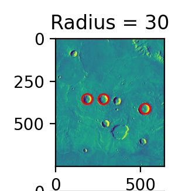
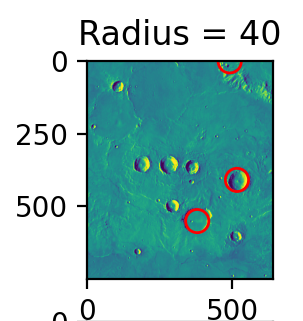
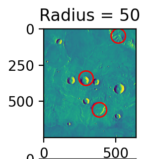
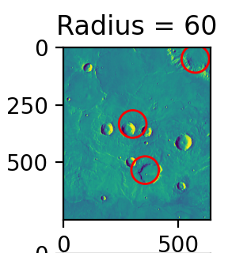
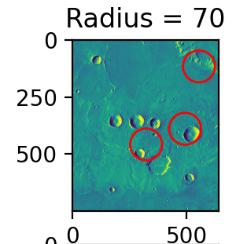
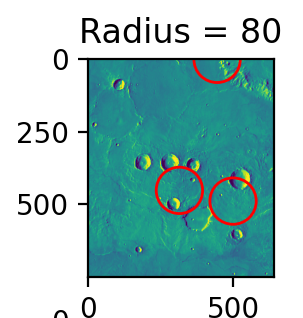
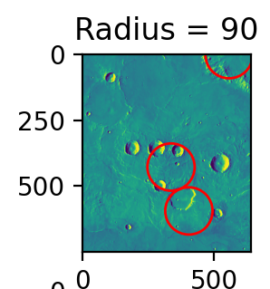
Test image 2
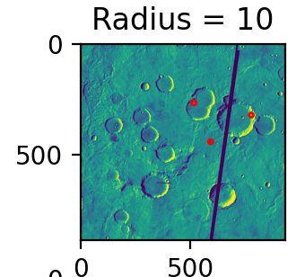
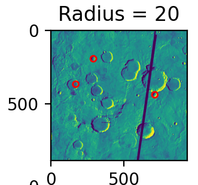
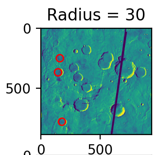
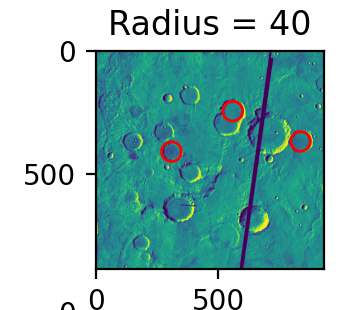
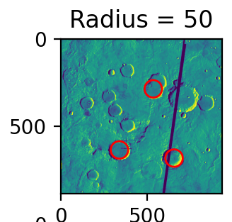
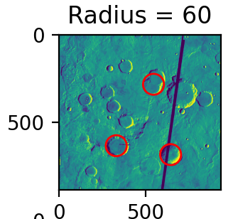
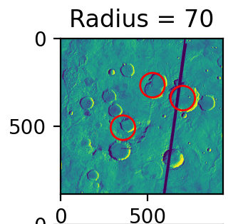
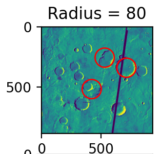
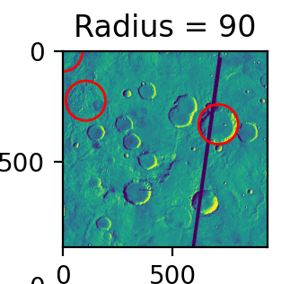
Test image 3
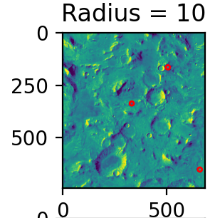
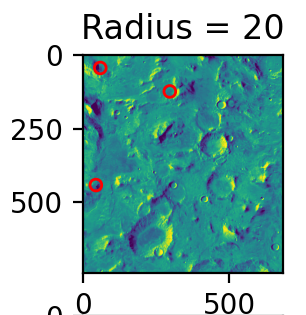
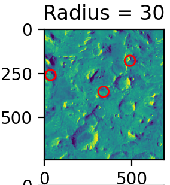
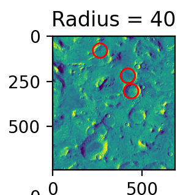
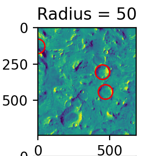
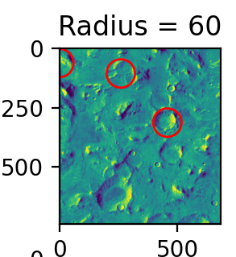
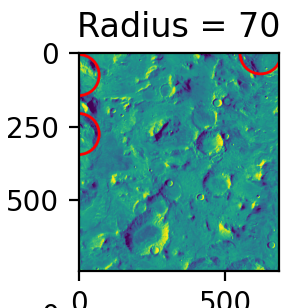
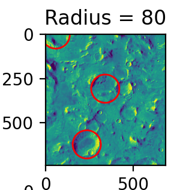
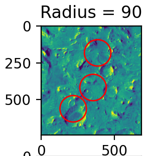
The next step is to perform a calculation of chamfer distance. The locations of the circles’ centers were saved as .npy files, which were then fed into a function to calculate the minimum distance between the three circles in one image to three circles in a second image. This was also performed comparing a single image to itself, where the chamfer distance is expected to be zero, as the images are the same. The results for points in circles of radius 10 are shown in the table below.
Image 1
Image 2
Image 3
Image 1
0
154.30152681719923
205.43739841789466
Image 2
154.30152681719923
0
173.83933364853746
Image 3
205.43739841789466
173.83933364853746
0
Finally we applied the distance algorithm to a collection of images from the main map and were able to find which image is a match using the minimum chamfer distance. Ideally We would iterate through the entire image but this approach was found to be computationally intense, so in the interest of time and with a lack of large supercomputers (as would be used in a professional space expedition) the small scale test achieves the same goal of localizing an image using craters as features.
Image 1
Image 2
Image 3
Image 4
Image 5
Test Image
5
153
203
922
510
The test results above show that this approach is able to successfully identify the location an image is taken from using only 3 circular image features at multiple radii (as it was trying to find image 1 and did so successfully). This result is promising due to the high degree of accuracy, but the concern would be that the computational time required to find the number of craters is too much to be feasible as a quick localization strategy, without the assistance of large computers. However, the intended client being agencies like NASA or companies with large budgets, this is not a primary concern.
This approach could also be improved. The goal was set in the beginning to find the height at which an image was taken from the martian surface, but this was proven to be very unreliable. This is because at different heights the crater’s distribution is not unique enough to give an accurate estimate in any way. Also, there are areas of the test images which do not have image data. This was worked around in the code by simply ignoring those sections, but it did result in areas with missing sections matching with the query image when the variable of height was added. As such this approach was quickly abandoned. However, if given more time to adapt the problem we believe it is possible to do height localization by incorporating other methods, perhaps using triangulation of shadows or finding key features like known crater centers and identifying those.
Blob Detector + SSD Approach
To preprocess the data, the raw images are done in a cylindrical projection, making viewing the entire map difficult:
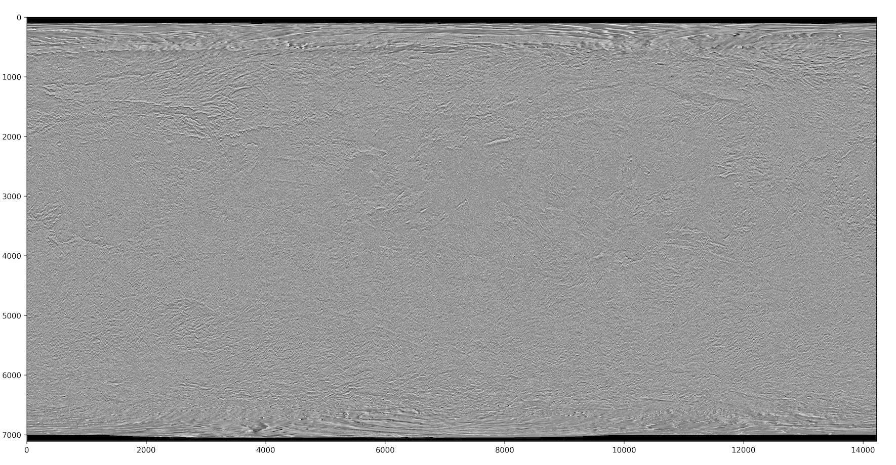
We first reproject the map, correcting for distortions:
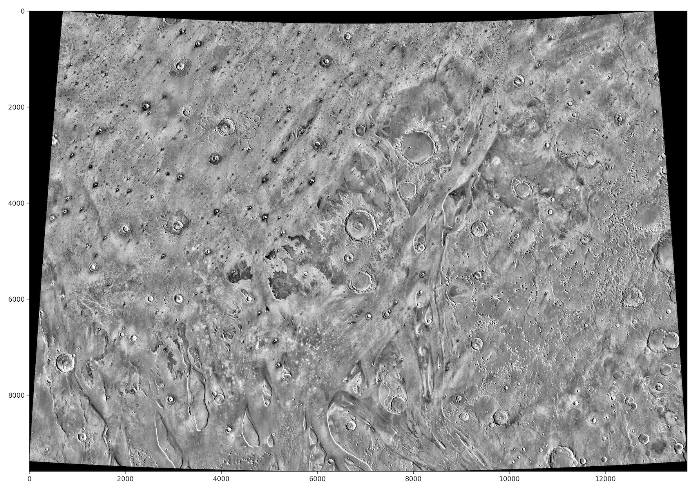
We then split up this reprojected image into tiles for ease of processing and crater detection. For example:
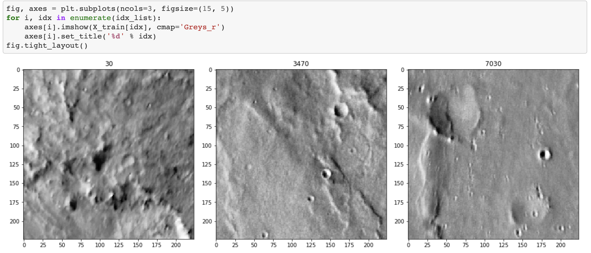
Now, I am using an object detector for each tile, specifically using a blob detector and will extract the SURF descriptors for each region, which I used an already existing implementation. I then use an estimator to determine whether or not the objects detected are craters, specifically using gradient boosted decision tree classifiers from sklearn. Currently I am still working on this, but here is a preliminary prediction:
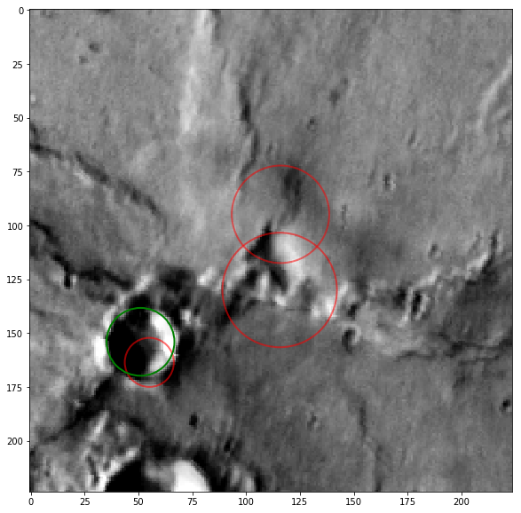
Next steps for my approach include using Keras's implementation of a single-shot multibox detector(SSD).
BRIEF Approach
For the BRIEF approach, we used OpenCV to extract key points and descriptors from a plane image of Mars and a local region within the plane image. The key points were detected using STAR, and then we used OpenCV’s BriefDescriptorExtractor to get the descriptors from those key points. The find_and_match_brief method in BRIEF_approach.py uses brute force matching and takes in a number of matches to display in the results – showing all matches by default.
For the final project update, we did more experimentation with the basis of the BRIEF approach completed. First, we compared the BRIEF approach to another feature detector - ORB (Oriented FAST and Rotated BRIEF). In the original update, we saw that matching features within a small region of the Mars surface was highly inaccurate. To compensate for this, we tested two different windows: one that was about half the size of the surface in the image, and one that was about a quarter of the size of the surface in the image. For all the matches showing in the rest of the images, only the best 20 matches computed are showing.
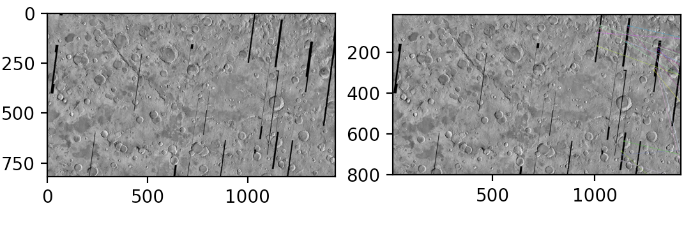
a) Original local region (top half of image) and local region with matches showing using BRIEF
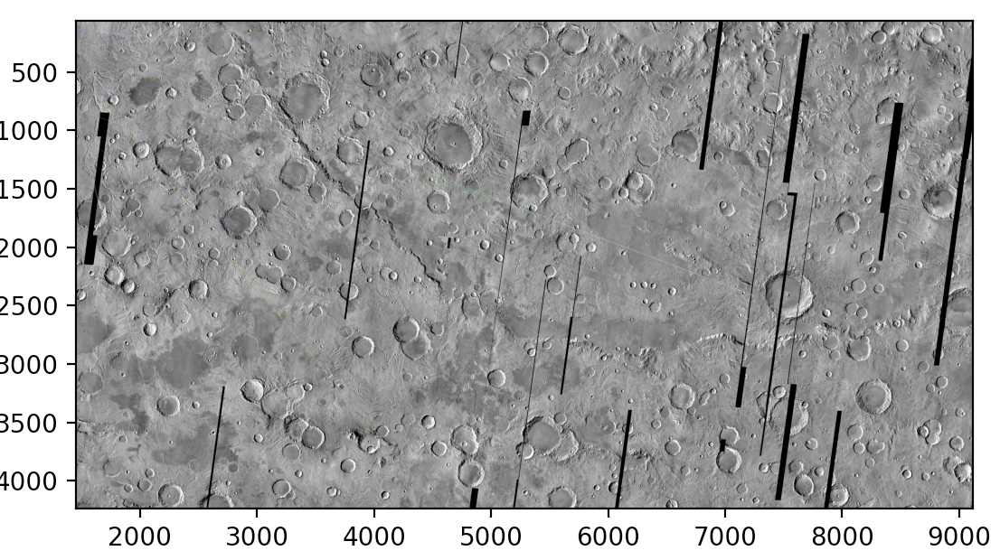
b) Local region matched to plane surface, zoomed in on the location of the local region
These two images depict the first local region tested using BRIEF without smoothing. The matches on the local region are all composed of the noise in the image - which we thought would have made this feature matching be wildly inaccurate. However, as we can see in the Figure b, all of the matches actually do fall in the correct region in the plane. Next, we will look at a smaller local region in the same Mars plane and compare results.
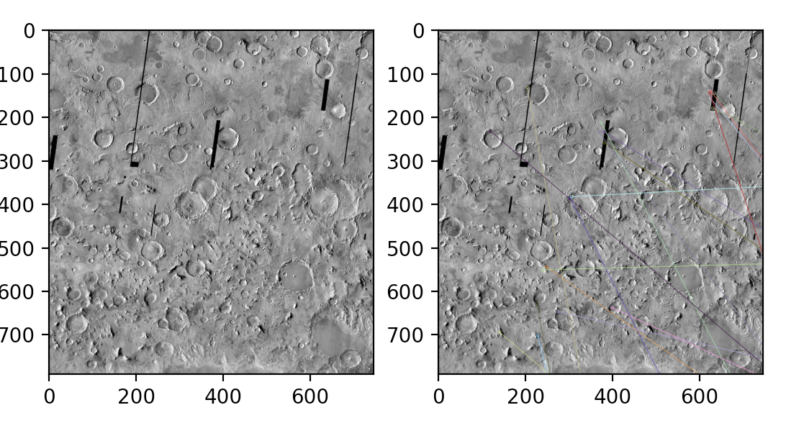
c) Original local region (bottom left corner of image) and local region with matches showing using BRIEF
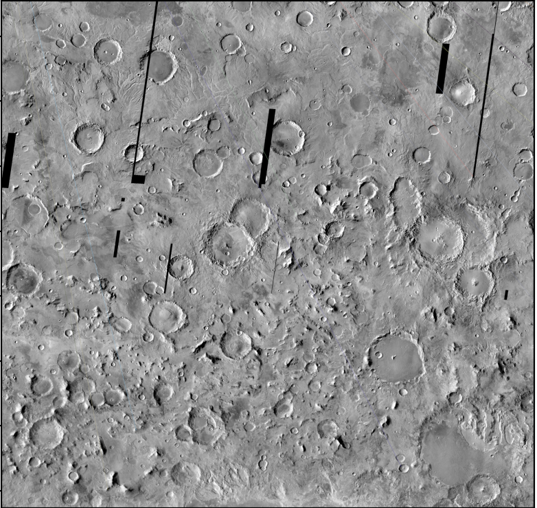
d) Local region matched to plane surface, zoomed in on the location of the local region
As we had concluded before, using a smaller local region decreases the accuracy of our feature matching on the Mars surface. There are only a couple matches in this region of the plane (top right area mainly), whereas using half the plane as our window gave us entirely correct matches. This may also be because some of the features weren't on noise, but were on actual craters in the local image. However, we have to consider the real life feasibility of these two windows. If this were an application actually being used on Mars for figuring out where you were located on the planet, and if you already had access to a location in relation to half of the surface, you likely would already know where you were. Thus, we need to find ways to increase accuracy with a smaller selected window. Before we explore that part of the approach, lets compare the statistics of these two different window sizes.
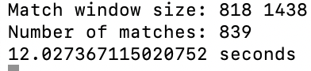
e) Statistics of the half plane window
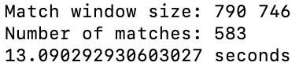
f) Statistics of the quarter plane window
Interestingly enough, the smaller window actually took more time than the long window to compute and match features. This could be because matching was simpler in the larger window due to all the features being on computed on the noise. Now, we will compare these results to using the ORB approach with the same local regions and plane.
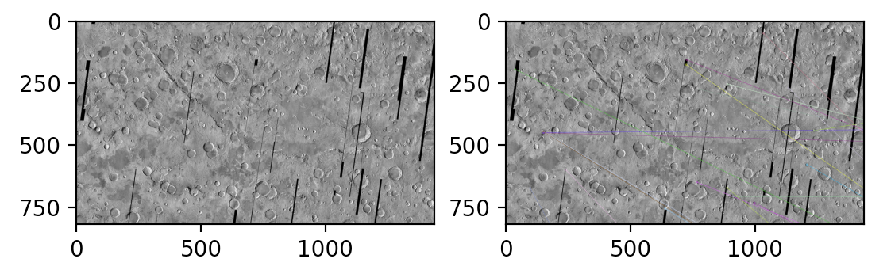
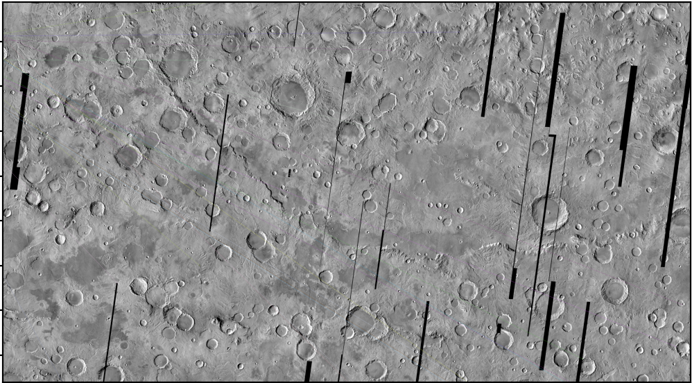
g) Local region (top half of plane) with matches, and local region matched to plane surface, zoomed in on the location of the local region
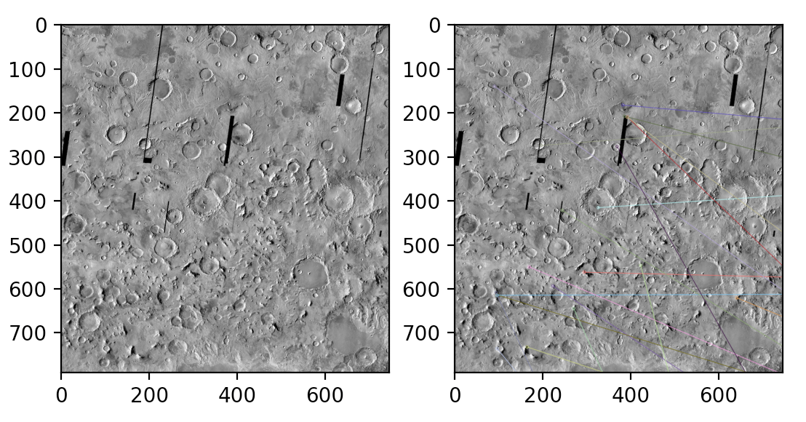
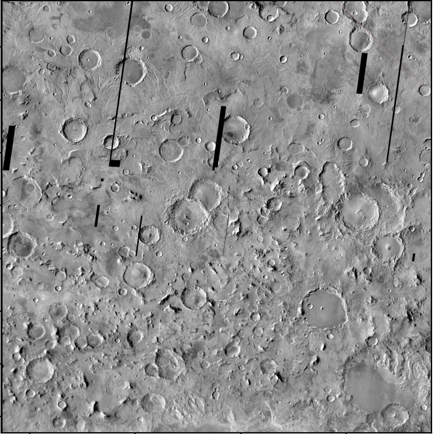
h) Local region (bottom left corner of plane) with matches, and local region matched to plane surface, zoomed in on the location of the local region
Using ORB, the accuracy of the top half of the plane with pretty similar, but the bottom left corner is seeemingly less accurate than when using the BRIEF detector. However, the more interesting part of the results lies in the computed statstics.
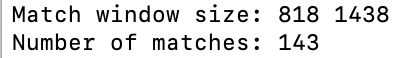
i) Statistics of the half plane window (ORB)
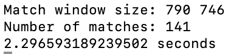
j) Statistics of the quarter plane window (ORB)
The ORB detector was far, far faster than the BRIEF detector was (2.3 seconds best compared to 12 seconds). This was likely because there was a smaller number of matches detected with this detector compared to using BRIEF, meaning sorting them and finding the 20 best matches took a lot less time. Although the accuracy decreased slightly from the BRIEF detector, we accept the trade off for a greater increase in speed and seek to increase the accuracy using a different method - smoothing the images first. We will focus on the smaller window since the larger window is not very applicable in a real life setting.
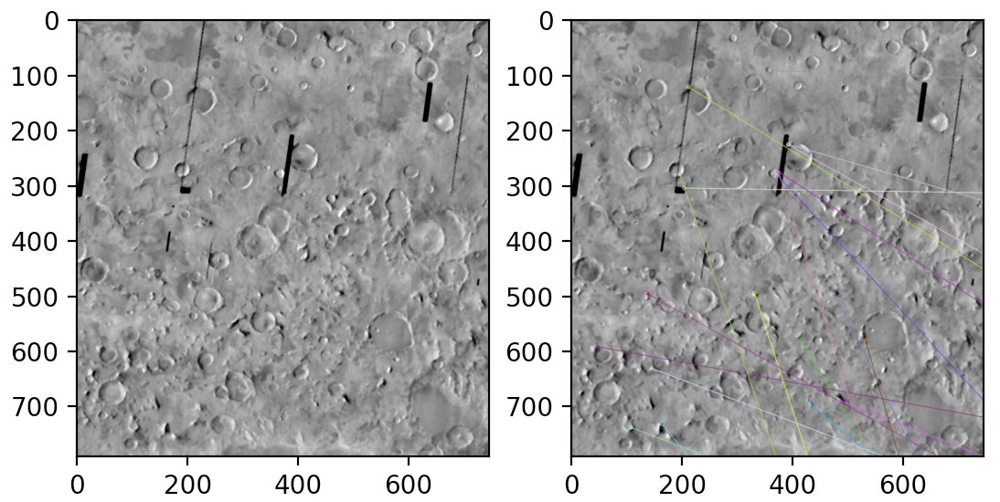
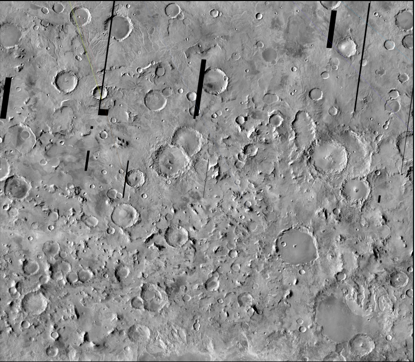
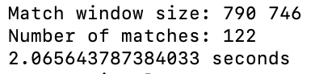
k) Local plane, matches, matched plane, and statistics for preprocessing the images by smoothing them.
Comparing the matched plane for the smoothing images and non smoothed image in Figure h, we can see that accuracy has been slightly improved, with more matches in the region depicted in the smoothed plane. Also, speed has again increased according to the statistics for the smoothed feature matching (2.06 seconds compared to 2.3 seconds). Originally, we thought that smoothing would have caused the detection and matching to be slower, as preprocessing an image is an extra step. However, it is likely that this actually causes our detection and matching to be faster as less matches were found, so less had to be sorted. This saves more time than smoothing adds on, since OpenCV's functions are highly optimized. Therefore, we can see that the best results can be obtained from using ORB with preprocessed images.
Conclusions and Future Work
BRIEF Approach
The direction we went with for the BRIEF approach changed slightly over experimentation, and we discovered that using Oriented FAST and Rotated BRIEF (ORB) detection yielded better results in terms of both accuracy and speed. One step further, preprocessing the images resulted in higher accuracy and even a faster runtime for ORB detection. That being said, there is still room for improvement with the method. Smaller and smaller window sizes yield higher inaccuracies, so more experimentation - possibly with different types of smoothing filters - could take place to improve our results. However, for this type of project specifically, it is likely that BRIEF and ORB aren't the best choices for feature detection and matching. This is because the surface of Mars is composed of many craters, giving the surface a highly repetitive look and causing the detector to not be very accurate overall.
Blob Detector + SSD Approach
Given the predictions that the blob detector has made so far, the accuracies seem promising. Along with using an neural network, this will most likely yield the most accurate result out of all the approaches.